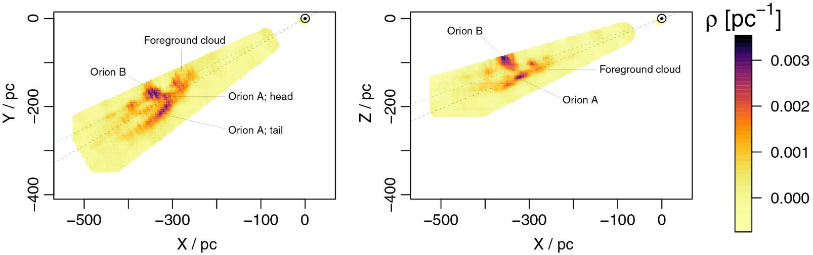

Mapping Interstellar Dust in 3D
Heidelberg Physics Grad Days, 4-8 October 2021
Gregory Green
Interstellar dust
An interplanetary grain, from E. Jessberger (2005).
- ≲ 1μm silicate and carbonate grains.
- Make up 1% of the mass of the ISM.
- Absorb & scatter light: "extinction."
→ ~30% of light in Universe processed by dust.

Based on the mean Milky Way extinction curve of Weingartner & Draine (2001).
Extinction as function of wavelength
$\lambda \approx 2.16 \, \mathrm{\mu m}$
$\lambda \approx 1.66 \, \mathrm{\mu m}$
$\lambda \approx 1.24 \, \mathrm{\mu m}$

$\lambda \approx 0.89 \, \mathrm{\mu m}$
$\lambda \approx 0.75 \, \mathrm{\mu m}$
$\lambda \approx 0.62 \, \mathrm{\mu m}$
Extinction: effects on stellar photometry
Two effects:
- "Extinction": sources appear fainter.
- "Reddening": sources appear redder (because more extinction at short wavelengths).
Reasons to ...
... hate dust:
- It reddens and extinguishes galaxies, SNe Ia, stars, ...
- It complicates selection functions: galaxy surveys, stellar dynamics in the MW, ...
- It emits in the far-infrared: CMB, ...
... love dust:
- It traces the interstellar medium, star-forming regions, chemical enrichment.
- Many open questions: dust composition, variation in the wavelength-extinction relation.
⇒ Either way, mapping dust is useful.
How to map dust?
1. Using far-infrared emission
Modified black-body model

$$ I_{\nu} \left( \nu , T , \beta \right) = \overbrace{\sigma}^{\mathrm{column}} \underbrace{\kappa \left( \nu , \beta \right)}_{\mathrm{low-}\nu\ \mathrm{cutoff}} \overbrace{B_{\nu} \left( \nu , T \right)}^{\mathrm{blackbody}} ,\ \ {\scriptstyle \mathrm{where}\ \kappa \ \propto \ v^{\beta}} \, . $$
Algorithm
- Map $I_{\nu}$ at set of frequencies over the sky.
- Infer maps of $T$, $\beta$ and $\sigma$.
- Assume optical & NIR extinction proportional to $\sigma$.
Limitations
- Degeneracies between $(\sigma, T, \beta)$.
- Intensity is independent of distance.
- Calibration: column density → extinction/reddening.
FIR-emission-based dust maps
Schlegel, Finkbeiner & Davis (1998) and Planck Collaboration+ (2013)
Originally developed for CMB subtraction, but widely used throughout astronomy.
2. Using stars
We can determine stellar distances (from parallaxes and photometry).
Stellar photometry directly traces optical & NIR extinction.
→ We can trace variation in the wavelength-extinction relation.
Gaia
> billion stellar parallaxes
Pan-STARRS 1 (PS1)
5 optical-NIR bands: g, r, i, z, y
Imaged the sky North of declination -30° → ¾ of sky
~billion stars with high-quality photometry
Two Micron All-Sky Survey (2MASS)
3 NIR bands: J, H, Ks
All-sky coverage
~300 million high-quality stars
Inferring stellar parameters
(distance, reddening, stellar type)
Stellar distance & extinction: "photometric parallax"
Adapted from Berry+ (2012)
- Star is observed at point 1 in color-color space.
- Stars are moved along the "reddening vector" in color-color space.
- The star could have come from points 2 or 3.
- Each possibility implies a different absolute magnitude, and therefore distance.
→ More complicated than this: photometry has uncertainties, we have to apply priors, ...
Extinction as function of distance

Extinction as function of distance

Extinction as function of distance

Extinction as function of distance

Extinction as function of distance

Extinction as function of distance

Extinction as function of distance

Extinction as function of distance

Extinction as function of distance
Extinction as function of distance
"Bayestar" forward model

For each star:
Stellar type determines absolute magnitudes: $\vec{M} ( \vec{\theta} )$.
Universal extinction law (one type of dust): $\vec{A} = E \, \vec{R}$.
Apparent magnitudes: $\vec{m} = \vec{M} ( \vec{\theta} ) + E \, \vec{R} + \mu$.
Parallax: $\varpi \propto r^{-1}$.
Priors on distribution of stars, luminosity function, etc.
$\implies$ Infer $( \vec{\theta}, E, \mu )$ given $( \hat{m}, \hat{\varpi} )$.
Individual stellar posterior
$$ p \left( \vec{\theta}, \mu, E \mid \hat{m}, \hat{\varpi} \right) = \frac{ p \left( \hat{m}, \hat{\varpi} \mid \vec{\theta}, \mu, E \right) p \left( \vec{\theta}, \mu, E \right) }{ p \left( \hat{m}, \hat{\varpi} \right) } $$
Individual stellar likelihood
$$ p \left( \hat{m}, \hat{\varpi} \mid \vec{\theta}, \mu, E \right) = p \left( \hat{m} \mid \vec{\theta}, \mu, E \right) p \left( \hat{\varpi} \mid \mu \right) $$
← $ p \left( \hat{m} \mid \vec{\theta}, \mu, E \right) $ from empirical stellar model in PS1-2MASS (shown here in color-color space).
Trivial parallax likelihood: $p \left( \hat{\varpi} \mid \mu \right)$
Individual stellar prior
$$ p \left( \vec{\theta}, \mu, E \right) = p \left( \mu \right) p \left( \vec{\theta} \mid \mu \right) p \left( E \right) $$
Prior on distance modulus should be proportional to number of stars along line of sight per unit distance modulus:
$$ p \left( \mu \right) \propto \frac{ \mathrm{d}N }{ \mathrm{d}\mu \mathrm{d}\Omega } = \frac{ \mathrm{d}N }{ \mathrm{d}r \mathrm{d}\Omega } \frac{ \mathrm{d}r }{ \mathrm{d}\mu } \, . $$
Transform the volume element: $$ \mathrm{d}V = r^2 \mathrm{d}r \mathrm{d}\Omega \, . \implies p \left( \mu \right) \propto r^2 \frac{ \mathrm{d}N }{ \mathrm{d}V } \frac{ \mathrm{d}r }{ \mathrm{d}\mu } \, . $$
Using $\mu = 5 \log_{10} \left( \frac{r}{10\,\mathrm{pc}} \right)$ and $n \left(\mu\right) = \mathrm{d}N/\mathrm{d}V$, $$ p \left( \mu \right) \propto 10^{3\mu/5} n \left( \mu \right) \, . $$
The term $10^{3\mu/5}$ takes into account that volume per unit distance modulus increases as we look farther out. We are looking at a cone, and distance modulus is a logarithmic unit of volume.
Model of stellar density throughout the Milky Way
→ SDSS Tomography model (recall from lecture 1)


Three-component density model
Thin & thick disks: $$\rho \left(R,z\right) \propto \exp\left(-\frac{R}{L}-\frac{z}{H}\right)$$ $L$ = scale length, $H$ = scale height.
Oblate halo: $$\rho \left(R,z\right) \propto \left[R^2 + \left(\frac{z}{q_H}\right)^2\right]^{-n_H}$$ $q_H$ controls oblateness, $n_H$ = power-law exponent. (power law "breaks" in outer halo)
Stellar type prior
Stellar type = metallicity, luminosity.
$$ p \left( \left[ \mathrm{Fe}/\mathrm{H} \right] \mid \mu \right) p \left( M_r \right) $$
Metallicity prior: SDSS Tomography model (again)
$p\left( \left[ \mathrm{Fe/H} \right] \mid Z \right)$ in Solar neighborhood:
← Disk & halo have different metallicity distributions
Typical stellar posterior
$p\left( \mu, E \mid \hat{m}, \hat{\varpi} \right)$ in Solar neighborhood:
Compare with Hertzsprung-Russel Diagram
Importance of priors
Stellar PDFs, centered on the true values, stacked for 5000 stars (using mock data).
Flat priors perform much worse!
One sightline

Background: stacked stellar PDFs for one mock sightline.
Overplotted: samples of distance-reddening relation.
Top panels: individual stellar PDFs.
Repeat in every sightline
Split up sky into pixels of a few hundred stars.
Smaller pixels in regions with higher stellar density.
Infer extinction vs. distance in every pixel independently.
Bayestar results
Reddening in distance slices

Reddening in distance slices

Reddening in distance slices

Uncertainty in the map
Distance increases with time. Uncertainty represented by flickering.
Galactic anticenter
Orbiting the Sun at distance of 25 pc, looking towards the anticenter.
Galactic plane
Oscillating above and below the Galactic plane.
Bird's-eye view of the Galactic plane
Sun at the center, Galactic Center off the plot to the right.
Overplotted: masers in high-mass star-forming regions.
Possible spiral-arm locations are labeled.
Spiral arms visible in dust?
Spatial priors on dust density
Non-smoothness in inferred dust density
"Holes" in nearby slices of the dust map.
→ This is not what we expect the dust density field to look like in real life.
Inferred dust density becomes smoother at greater distances, because it is based on a larger number of stars.
How to address this problem?
→ Fit multiple sightlines simultaneously, and impose priors that favor smooth dust density fields.
Gaussian processes
a quick-and-dirty review
Covariance kernel
$$\left< X ( \vec{r_1} ) \, X ( \vec{r_2} ) \right> = K ( r_{12} )$$
Gaussian random field
exp(Gaussian random field)
Bayestar19 approach: applying Gaussian process prior iteratively

1. Infer dust in each signtline independently.
2. Go back to each sightline, and infer its dust again, taking into account the dust in nearby pixels.
3. Repeat N times, increasing correlation length to desired level.
With and without Gaussian process prior
Correlating the stars directly
Rezaei+ (2017)
Extinction of star $n$: $$ a_n \propto \int_0^{r_n} \!\!\!\!\!\! \rho \left(r\right) \mathrm{d}r \approx \sum_j G_{n,j} \rho_{j} \, , $$ where $\rho_j$ are the densities at all the "knots" along all the sightlines, and $G_{n,j}$ describes which knots are along the sightline for star $n$.
The densities at the different "knots" are correlated with one another, through a Gaussian process: $$ p \left( \vec{\rho} \right) \propto \exp \left( -\frac{1}{2} \vec{\rho}^T C_{\rho}^{-1} \vec{\rho} \right) \, . $$
A linear transformation of a Gaussian is a Gaussian, so the prior on $\vec{a}$ is Gaussian, with $$ \vec{\mu}_a = G \vec{\mu}_{\rho} ,\hspace{1em} C_a = G C_{\rho} G^T \, . $$
Likelihood of $\vec{a}$ comes from observations of stellar photometry.
⇒ There is a straightforward way to predict the (Gaussian) posterior of $\rho$ at any new point in space.
Results: structure of the Orion clouds
Variational inference with a log-normal prior
Leike+ (2019, 2020)
Prior: logarithm of density is a Gaussian process: $$ \rho \sim \exp\left( \mathcal{GP} \right) $$
Infer large volumes at once: not sightline-by-sightline.
Variational method: approximate the posterior as a Gaussian, and minimize difference between variational Ansatz and the true posterior.
Models dust out to ~400 pc.
→ Very high resolution for nearby dust.
Variations in dust properties

{kind=link}
Dust wavelength-extinction relation varies throughout the Milky Way.
→ Primary effect in the optical: variation in dust grain-size distribution.
Parameterized by the ratio of extinction to reddening in optical wavelengths: $$ A\left(V\right) = R\left(V\right) E\left(B-V\right) $$
→ Slope of the extinction-wavelength relation.
Pair method
Stellar model colors
Basic idea: compare unreddened and reddened stars of same spectroscopic type.
Match spectroscopic survey (APOGEE) to photometric surveys (PS1, 2MASS, WISE).
Model colors of star $k$ as a function of spectroscopic type and reddening: $$ \vec{c}_k = \vec{f} \left( T_{\mathrm{eff},\,k}, \, \left[ \mathrm{Fe} / \mathrm{H} \right]_k \right) + \vec{R}_0 \, E_k \, . $$
The function $\vec{f}$ and reddening vector $\vec{R}_0$ are constrained by a large number of stars.
Reddening of each star
Stellar reddenings, based on pair method:
Above, we only determined $\vec{R}_0$, the average reddening vector.
→ What if it varies in space?
Difference between observed and model color: $$\vec{\delta c} \equiv \hat{c} - \vec{c}_{\mathrm{model}} = \hat{c} - \vec{f} \left( T_{\mathrm{eff}}, \, \left[ \mathrm{Fe} / \mathrm{H} \right] \right) \, .$$
← Reddenings don't necessarily lie along $\vec{R}_0$.
Principal-component analysis of stellar reddenings
← Find the main axes in color-space along which dust reddening moves stars.
The 1st principal component is the mean reddening relation.
The 2nd principal component corresponds to $R\left(V\right)$ variation.
Distribution of $R\left(V\right)$ over the sky
Use stellar $R\left(V\right)$ measurements in combination with 3D dust map to determine $R\left(V\right)$ in 3D.
$R\left(V\right)$ in 3D
Schlafly, Peek, Finkbeiner, Green (2017)
→ Unexpectedly large-scale variations in dust properties.
Final thought: determining dust from star counts?
The DECaPS survey
There is a mathematical framework for this: Poisson point processes (Sale+ 2015).
Mapping dust ...
... is important for many areas of astronomy.
... gives us a window into the structure of our galaxy.
... involves many interesting inference techniques and datasets.